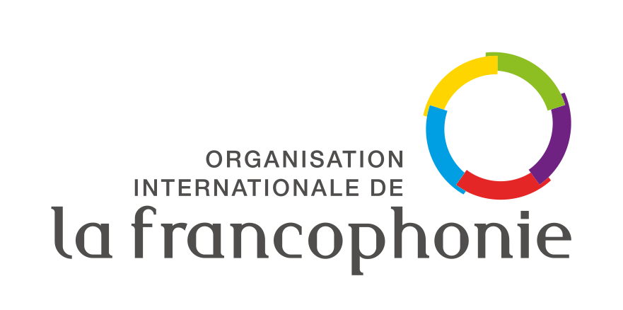

SCS · Organisation Internationale de la Francophonie
Plateforme Emploi Jeunes — V1
Plateforme de gestion et de suivi opérationnel des programmes OIF d'insertion économique des jeunes francophones. Données réelles, conformité RGPD native, quatre rôles cloisonnés.
5 512
Bénéficiaires accompagnés
318
Structures appuyées
53
Pays d'intervention
91 %
Femmes accompagnées
Données réelles : base SCS au 27 avril 2026, période cumulée 2018-2025.
Tous les projets emploi jeunes utilisent le même cadre de mesure, validé par le SCS.
Bénéficiaires ayant suivi une formation au cours de la période.
Bénéficiaires en gain de compétences (questionnaire longitudinal D2).
Activités économiques appuyées par les programmes OIF.
Emplois indirects induits par les activités économiques accompagnées.
Marqueur transversal : contribution du français à l'employabilité.
Référentiel partagé par tous les projets emploi jeunes OIF.
01
Insertion professionnelle
Formation, employabilité, accès à l'emploi.
02
Entrepreneuriat
Soutien aux activités économiques portées par les jeunes.
03
Égalité femmes-hommes
Marqueur transversal — 91 % de femmes accompagnées.
04
Apport du français (F1)
Contribution du français à l'accès à l'emploi.
Vue centrale de la plateforme. Les chiffres affichés ici reflètent les données réelles de la base SCS.
Période : depuis toujours · Vue Admin SCS
Jeunes formés au cours de la période
5 512
5 025 femmes · 488 hommes
Gain de compétences
À venir
Diapo D2 — questionnaire longitudinal
Activités économiques appuyées
319
Emplois indirects
500
Estimation Sondex
Apport du français à l'employabilité
À venir
Diapo D3 — questionnaire longitudinal
5 512 bénéficiaires · 3 programmes
5 512 bénéficiaires en base · saisie individuelle ou par import Excel · contrôles RGPD natifs.
| Nom complet | Pays | Projet | Année | Statut | Consentement |
|---|---|---|---|---|---|
| Aïssatou D. | Sénégal | PROJ_A14 | 2025 | Formé · entrepreneuriat | ✓ Recueilli |
| Mamadou K. | Mali | PROJ_M07 | 2024 | Formé · insertion | ✓ Recueilli |
| Fatoumata B. | Côte d'Ivoire | PROJ_A14 | 2025 | Formé · entrepreneuriat | ✓ Recueilli |
| Kossi A. | Togo | PROJ_T03 | 2023 | En cours | — Non requis |
| Awa S. | Bénin | PROJ_B05 | 2024 | Formée · insertion | ✓ Recueilli |
Bénéficiaires
5 512
91 % de femmes · 53 pays · 2018-2025
Structures appuyées
318
Activités économiques : 319 liées
Imports Excel
Template
Validation par lignes · rapport d'erreurs détaillé · ré-imports idempotents par identifiant_externe
Cibler une cohorte précise (projet, pays, année, profil) plutôt qu'envoyer en masse. Méthodologie OIF appliquée informatiquement.
Filtres combinables : projet, pays, année de formation, sexe, statut, type de structure, secteur d'activité.
Liste paginée des cibles, toutes pré-cochées. Possibilité de décocher individuellement les contacts à exclure (rompus, doublons).
Envoi par Resend (SMTP transactionnel), journalisation complète, suivi des taux d'ouverture et de complétion.
Exemple : aperçu de strate
Filtres : projet PROJ_A14, pays Sénégal, année 2025, sexe femme, statut formé.
342
Cibles totales
298
Avec consentement et email
38
Sans email
6
Sans consentement
Chaque utilisateur ne voit que les données de son périmètre. Cloisonnement appliqué au niveau de la base via Row Level Security (PostgreSQL).
Service de Conception et Suivi
Vue globale de toutes les données. Gestion des utilisateurs, validation des demandes d'accès, journal d'audit, exports complets, paramétrage de la plateforme.
Coordonnateurs OIF
Pilotage des projets gérés (filtre projets_geres). Lancement de campagnes, suivi des cohortes, indicateurs A1/B1/B4 sur le périmètre projet.
Partenaires de mise en œuvre
Saisie des bénéficiaires et structures de leur organisation. Suivi des consentements RGPD, génération d'enquêtes longitudinales, exports périmètre partenaire.
Bailleurs, ambassades, États
Lecture seule des indicateurs agrégés et anonymisés. Reporting institutionnel. Aucune donnée nominative accessible.
Quatre principes appliqués au niveau de la base, impossibles à contourner depuis l'application.
Pas de courriel ni de téléphone enregistré sans consentement explicite et daté du bénéficiaire (contrainte SQL).
Row Level Security PostgreSQL : politique appliquée à chaque requête, pour les quatre rôles, sans exception.
Les suppressions sont tracées (qui, quand, motif) et conservées en table d'audit. Pas de perte irréversible.
Supabase région Frankfurt, conforme RGPD, sauvegardes quotidiennes chiffrées.